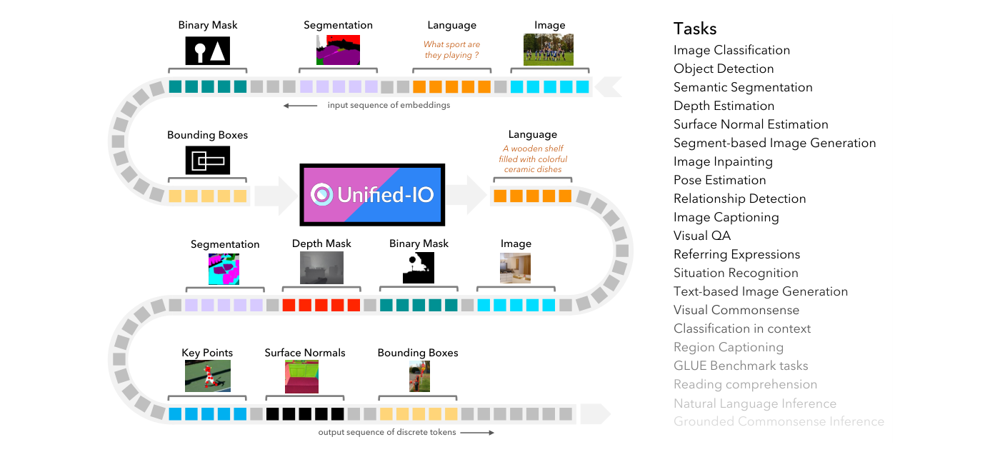
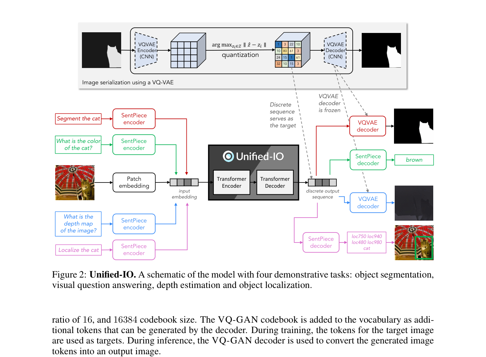
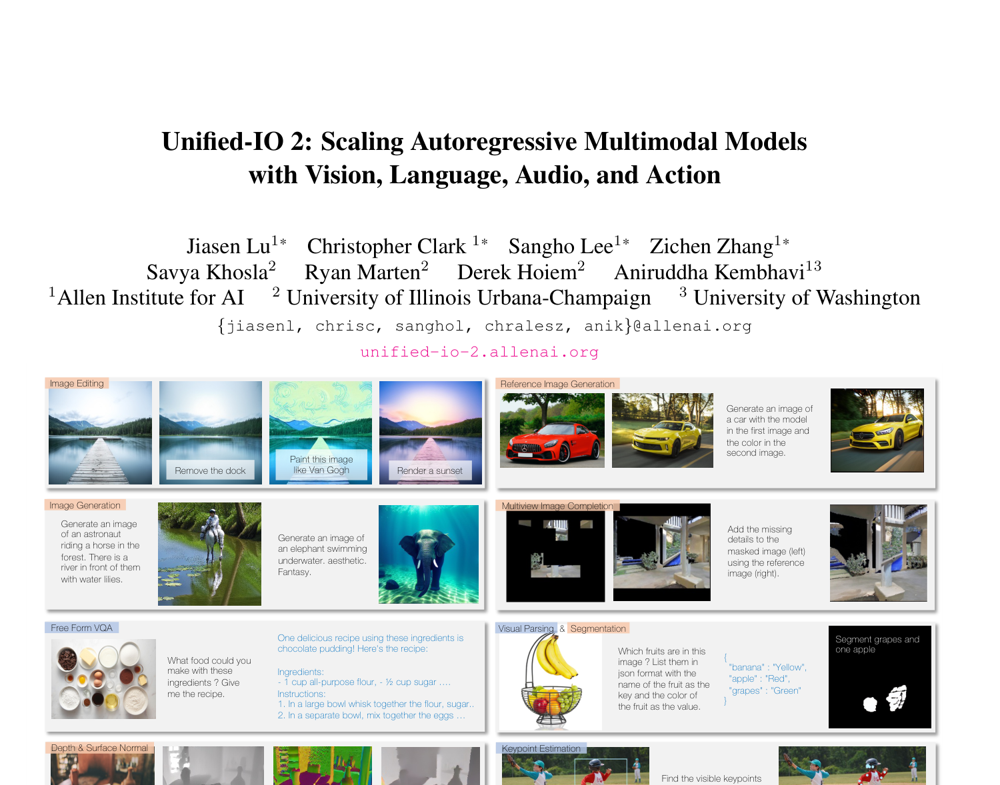
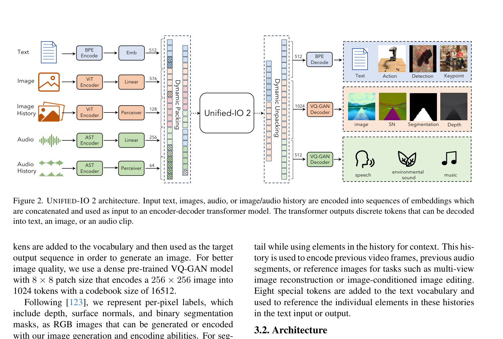
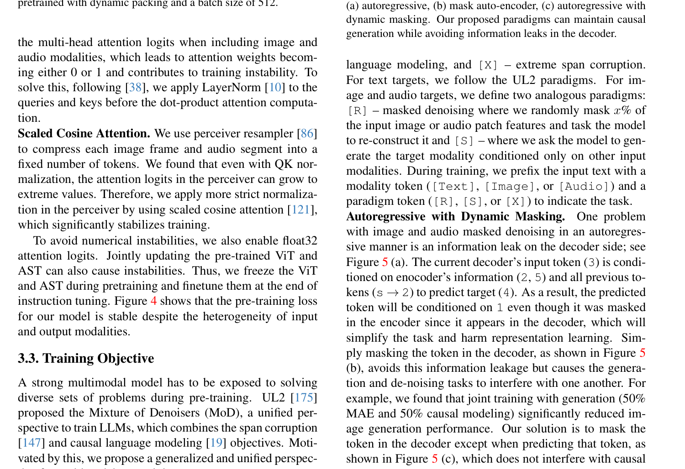
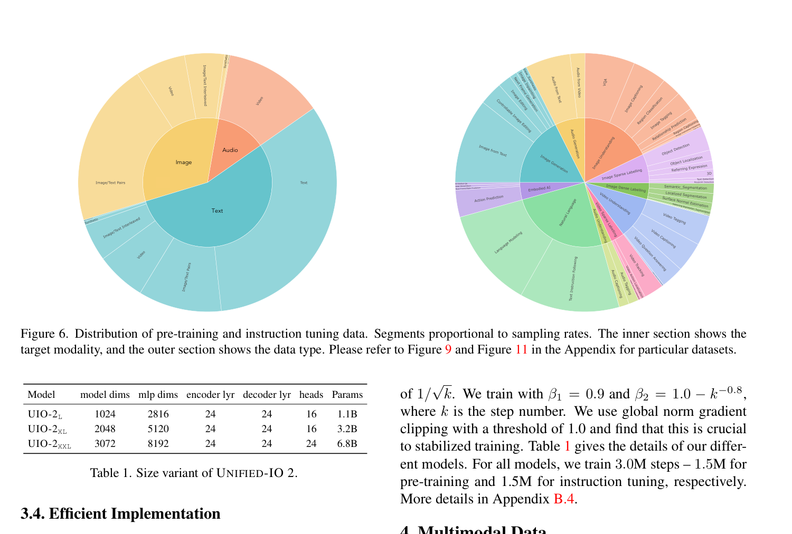
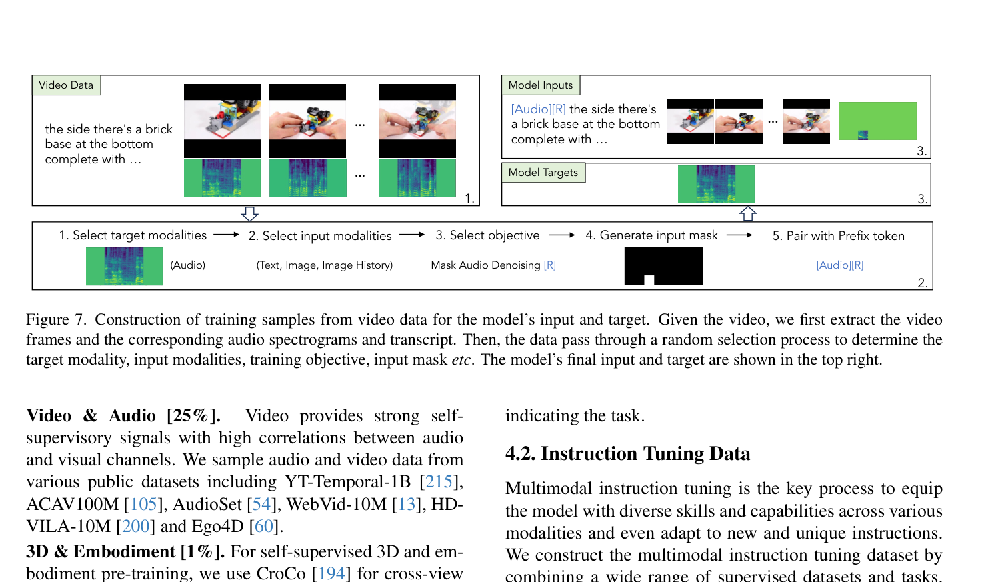

Unified-IO
Unified-IO¶
本笔记涵盖 Unified-IO → Unified-IO 2 的演进历程。
| 版本 | 论文 | 时间 | 核心变化 |
|---|---|---|---|
| Unified-IO | Unified-IO: A Unified Model for Vision, Language, and Multi-Modal Tasks | 2022 | 首个统一视觉+NLP的Seq2Seq模型，将所有模态离散化为token序列 |
| Unified-IO 2 | Unified-IO 2: Scaling Autoregressive Multimodal Models with Vision, Language, Audio, and Action | 2023 | 扩展到音频和动作模态，引入训练稳定性改进，支持指令跟随，从零训练7B模型 |
第一部分：Unified-IO - 统一视觉、语言与多模态任务的单一模型¶
📄 论文链接：arXiv:2206.08916 | PDF
目录¶
- 核心要点
- 1. 背景与动机
- 2. 方法
- 3. 网络结构
- 4. Unified-IO 总结
- 核心要点
- 1. 背景与动机
- 2. 方法
- 3. 网络结构
- 4. 数据与训练
- 5. Unified-IO 2 总结
- 总结与对比
核心要点¶
- 万物皆token：将图像、文本、边界框、分割掩码、深度图、关键点等所有输入输出统一表示为离散token序列，使单一Transformer模型可以处理所有任务
- 基于T5的Encoder-Decoder架构：在T5基础上扩展，加入patch embedding处理图像、VQ-GAN codebook token生成图像、坐标token表示空间结构
- 两阶段训练：先进行大规模去噪预训练（文本span denoising + 图像masked denoising），再进行95个数据集的大规模多任务联合训练
- 无需任务特定微调：仅通过自然语言prompt指定任务，单一模型即可在GRIT基准上完成全部7个任务，是该基准首个全任务支持模型
- 覆盖范围广：支持图像分类、目标检测、语义分割、深度估计、表面法线估计、图像生成/修复、姿态估计、VQA、指代消解、图像描述、NLP等90+数据集上的任务
1. 背景与动机¶
1.1 多任务模型的困境¶
在Unified-IO之前，多模态模型普遍存在以下问题：
- 任务特定分支：如Mask R-CNN使用ImageNet预训练encoder后接检测和分割的专用分支，每个任务需要独立的head
- 模态特定head：一些统一架构虽然去掉了任务特定head，但仍保留模态特定head（如一个语言decoder服务多个语言输出任务），本质上并未真正统一
- 局限于V&L：大多数统一模型的进展集中在视觉-语言任务，因为共享语言decoder相对简单，通常只支持少量任务
- 缺乏生成能力：很少有模型同时支持理解类和生成类任务（如同时做VQA和图像生成）
1.2 核心洞察¶
Unified-IO的核心洞察是：如果将所有模态的输入和输出都表示为离散token序列，那么就可以用NLP中成功的Seq2Seq架构来处理任意多模态任务。这意味着不需要任何任务特定或模态特定的分支，真正实现"一个模型做所有事"。

Figure 1: Unified-IO是一个单一的Seq2Seq模型，无需任务或模态特定分支即可执行计算机视觉和NLP中的多种任务。通过将每个任务的输入和输出统一为离散词汇token序列实现广泛统一，支持图像、掩码、关键点、边界框和文本等多种模态。2. 方法¶
2.1 统一任务表示¶
Unified-IO将所有模态统一到有限的离散词汇表中：
文本表示：使用SentencePiece分词器，与T5一致。每个任务通过自然语言prompt指定，例如"What is the depth map of the image?"用于深度估计，"What region does 'cat' describe?"用于目标定位。
图像和密集结构表示：使用VQ-GAN（Vector Quantization GAN）将图像编码为离散token序列。具体参数： - 下采样比例16倍 - Codebook大小16384 - 256×256图像编码为16×16=256个latent codes - VQ-GAN的codebook作为额外token加入词汇表 - 训练时以目标图像的VQ-GAN token作为生成目标 - 推理时用VQ-GAN decoder将生成的token还原为图像

Figure 2: Unified-IO架构示意图，展示了四个代表性任务（目标分割、VQA、深度估计、目标定位）的处理流程。图像通过VQ-VAE编码器序列化，文本通过SentencePiece编码，统一输入Transformer Encoder-Decoder。稀疏结构表示：添加1000个特殊坐标token到词汇表，表示离散化的图像坐标： - 点：2个token（x, y坐标） - 边界框：4个token（左上角x,y + 右下角x,y） - 带标签的框：4个坐标token + 文本类别标签 - 人体关节：一系列点token + 可见性标签
2.2 任务分类体系¶
Unified-IO将任务分为8大类：
| 任务组 | 数据集数 | 样本量 | 输入模态 | 输出模态 |
|---|---|---|---|---|
| 图像合成 | 14 | 56M | 文本/图像/稀疏 | 图像 |
| 稀疏标注 | 10 | 8.2M | 文本/图像/稀疏 | 稀疏 |
| 密集标注 | 6 | 2.4M | 文本/图像 | 密集(图像) |
| 图像分类 | 9 | 22M | 图像/稀疏 | 文本 |
| 图像描述 | 7 | 31M | 图像/稀疏 | 文本 |
| 视觉&语言 | 16 | 4M | 文本/图像/稀疏 | 文本/稀疏 |
| NLP | 多个 | - | 文本 | 文本 |
| 语言建模 | 2 | - | 文本 | 文本 |
3. 网络结构¶
3.1 基础架构¶
Unified-IO采用纯Transformer Encoder-Decoder架构，基本遵循T5设计： - Encoder和Decoder均由堆叠的Transformer层组成 - 每层包含自注意力、交叉注意力（Decoder）、前馈网络 - 残差连接 + Pre-Norm（在每个Transformer和前馈网络之前应用LayerNorm）
3.2 针对多模态的架构修改¶
相比原始T5，Unified-IO做了以下关键修改：
- Patch Embedding：将输入图像reshape为patch序列，通过线性投影嵌入（类似ViT），使Transformer能处理图像输入
- 词汇表扩展：加入位置坐标token（1000个）和VQ-GAN图像token（16384个）
- 2D相对位置编码：将T5的1D相对位置编码扩展为2D，使用固定数量的可学习嵌入
- 绝对位置编码：在token embedding上额外添加绝对位置编码，因为绝对位置信息对图像任务至关重要
3.3 模型规模¶
| 模型 | Encoder层数 | Decoder层数 | 模型维度 | MLP维度 | 注意力头数 | 总参数量 |
|---|---|---|---|---|---|---|
| Small | 8 | 8 | 512 | 1024 | 6 | 71M |
| Base | 12 | 12 | 768 | 2048 | 12 | 241M |
| Large | 24 | 24 | 1024 | 2816 | 16 | 776M |
| XL | 24 | 24 | 2048 | 5120 | 32 | 2.9B |
序列长度限制： - 输入文本最多256 tokens，输出文本最多128 tokens - 输入图像最多576 patches（384×384图像的24×24 patch编码） - 输出图像最多256 tokens（256×256图像的16×16 latent codes）
3.4 训练策略¶
预训练阶段（500k步）： - 文本Span Denoising：随机破坏15%的token，用唯一mask token替换连续被破坏的token，目标恢复原文 - 图像Masked Denoising：随机遮蔽75%的图像patches，目标恢复完整图像 - 数据混合：文本去噪一半来自纯文本（C4+Wikipedia），一半来自图文对（ImageNet21k/YFCC15M）；图像去噪使用相同的图文对数据和纯图像数据 - 两种目标等比例采样
多任务训练阶段（500k步）： - 集成95个数据集（来自62个公开数据源） - 批次内混合：每个batch内混合不同数据集的样本 - 各任务组等比例采样（1/8），但图像合成（3/16）和密集标注（1/16）例外 - 不做任务特定微调
优化器：Adafactor，学习率10⁻²预热10000步后按1/√k衰减，全局梯度裁剪阈值1.0（对XL模型训练稳定至关重要）。
4. Unified-IO 总结¶
Unified-IO的核心贡献在于证明了单一Seq2Seq模型可以通过统一token化表示来处理跨越视觉理解、视觉生成、NLP的广泛任务。它的关键创新不是某个单独的组件，而是将"万物皆token"的理念贯彻到底，用VQ-GAN处理密集输出、用坐标token处理稀疏输出、用SentencePiece处理文本，然后在同一个T5架构下联合训练。这为后续的多模态统一模型奠定了重要基础。
第二部分：Unified-IO 2 - 扩展到视觉、语言、音频与动作的自回归多模态模型¶
📄 论文链接：arXiv:2312.17172 | PDF
核心要点¶
- 四模态统一：从Unified-IO的视觉+文本扩展到视觉+文本+音频+动作，成为首个自回归方式理解和生成图像、文本、音频、动作的多模态模型
- 训练稳定性创新：提出QK Normalization、Scaled Cosine Attention、动态打包等关键技术解决多模态训练不稳定问题
- 从零训练：不依赖预训练LLM初始化，从零训练1B/3B/7B三个规模，证明多模态可以从头学起
- 指令跟随能力：构建120个数据集的指令微调集，使模型具备自由形式的多模态指令跟随能力
- Multimodal Mixture of Denoisers：将UL2的Mixture of Denoisers推广到多模态，并提出Autoregressive with Dynamic Masking解决信息泄露问题
1. 背景与动机¶
1.1 Unified-IO的局限¶
Unified-IO虽然实现了视觉和语言的统一，但仍有明显局限： - 仅支持两种模态：无法处理音频、视频、机器人动作等重要模态 - 无指令跟随能力：只能通过固定prompt执行预定义任务，不能响应自由形式指令 - 模型规模有限：最大仅2.9B参数，限制了语言能力 - 训练不够稳定：随着模态增加，标准Transformer实现会导致训练越来越不稳定
1.2 与同期方法的差异¶
当时的多模态系统主要有两条路线： - 基于预训练LLM：如Flamingo、LLaVA等，用adapter将视觉特征接入LLM。优点是语言能力强，缺点是通常不支持复杂多模态生成，且依赖昂贵的LLM预训练 - 从零训练：如OFA、BEiT-3等，但通常不支持复杂生成或指令跟随
Unified-IO 2选择从零训练，理由是： - 不需要昂贵的LLM预训练前置步骤 - 更符合人类同时学习多种模态的方式（而非逐个学习） - 可以更自然地支持多模态生成

Figure 1: Unified-IO 2是一个指令跟随模型，具备广泛的能力和模态支持。可以生成图像、音频、文本，执行图像编辑、深度估计、分割、目标检测、机器人操控等多种任务，支持多模态交错输入和自由形式输出。2. 方法¶
2.1 统一模态表示¶
Unified-IO 2在Unified-IO的基础上大幅扩展了模态表示：
文本：使用BPE分词器（替代Unified-IO的SentencePiece）。
图像： - 输入：使用预训练ViT编码图像为patch特征序列，再通过线性层投影 - 输出：使用更密集的VQ-GAN（8×8 patch size，256×256图像→1024 tokens，codebook大小16512），比Unified-IO的16×16更精细以提升图像质量 - 密集标签（深度、法线、分割掩码）仍表示为RGB图像
音频（新增）： - 输入：将最长4.08秒音频转为频谱图，用预训练AST（Audio Spectrogram Transformer）编码，拼接第2层和倒数第2层特征后经线性层投影 - 输出：自行训练的ViT-VQGAN（8×8 patch size，256×128频谱图→512 tokens，codebook大小8196）
动作（新增）： - 用于机器人操控任务 - 将动作离散化为token序列
图像/音频历史（新增）： - 支持最多4张额外图像和4段额外音频作为上下文 - 使用Perceiver Resampler压缩：图像压缩为32 tokens，音频压缩为16 tokens - 用于视频帧序列、参考图像编辑、多视角重建等任务 - 添加8个特殊token在文本中引用历史元素
稀疏结构：沿用Unified-IO的坐标token方案，并扩展到3D坐标、光流等。

Figure 2: Unified-IO 2架构。输入文本、图像、音频或图像/音频历史分别通过对应编码器编码为embedding序列，拼接后输入Encoder-Decoder Transformer。Transformer输出离散token，可解码为文本、图像或音频。Dynamic Packing/Unpacking机制高效处理变长序列。2.2 架构改进¶
Unified-IO 2发现随着模态增加，标准Transformer训练变得越来越不稳定。如图3所示，单独训练图像生成时loss和梯度范数稳定，加入文本后梯度范数略有增大，再加入视频/音频后梯度范数剧烈波动。为此提出了三项关键改进：
QK Normalization：在多头注意力的query和key上做点积之前，先对其应用LayerNorm。这解决了加入图像和音频模态后注意力logits过大导致权重退化为0或1的问题。
Scaled Cosine Attention：在Perceiver Resampler中使用缩放余弦注意力替代标准点积注意力。即使有QK Normalization，Perceiver中的注意力logits仍可能增长到极端值，Scaled Cosine Attention从根本上限制了注意力分数的范围，显著稳定了训练。
其他措施： - 启用float32注意力logits避免数值不稳定 - 预训练期间冻结ViT和AST，仅在指令微调末尾解冻微调

Figure 5: 掩码图像建模的三种范式对比。(a) 自回归方式存在信息泄露问题；(b) MAE方式避免了泄露但不支持因果生成；(c) 本文提出的Autoregressive with Dynamic Masking，既保持因果生成又避免信息泄露。2.3 Multimodal Mixture of Denoisers¶
受UL2的Mixture of Denoisers启发，Unified-IO 2将其推广到多模态预训练：
三种训练范式： - [R] Reconstruct：随机遮蔽x%的输入图像/音频patch特征，要求模型重建 - [S] Sequential：仅基于其他输入模态生成目标模态（如从文本生成图像） - [X] Extreme：极端span腐蚀（仅用于文本）
训练时在输入文本前加上模态token（[Text]/[Image]/[Audio]）和范式token（[R]/[S]/[X]）来指示任务类型。
Autoregressive with Dynamic Masking：解决了自回归方式下图像/音频masked denoising的信息泄露问题。标准自回归方式中，decoder可以看到当前要预测的token之前的所有target tokens，导致信息泄露。该方案在decoder端动态遮蔽已生成的tokens，既保持了因果生成的特性，又避免了泄露。
2.4 动态打包（Dynamic Packing）¶
多模态数据的序列长度高度可变（从几个文本token到1024个图像token），直接训练效率极低。Unified-IO 2提出动态打包： - 在Transformer encoder-decoder之前/之后进行打包/解包（而非预处理阶段） - 允许多个样本的token打包到同一序列中，通过attention mask防止跨样本注意 - 使用启发式算法在数据流中将长样本与短样本配对 - 带来约4倍训练吞吐量提升
2.5 模型规模与训练¶
| 模型 | 模型维度 | MLP维度 | Encoder层数 | Decoder层数 | 注意力头数 | 参数量 |
|---|---|---|---|---|---|---|
| UIO-2-L | 1024 | 2816 | 24 | 24 | 16 | 1.1B |
| UIO-2-XL | 2048 | 5120 | 24 | 24 | 16 | 3.2B |
| UIO-2-XXL | 3072 | 8192 | 24 | 24 | 24 | 6.8B |
训练配置： - Adafactor优化器，线性预热5000步，学习率按1/√k衰减 - 全局梯度裁剪阈值1.0 - 总计训练3.0M步：1.5M预训练 + 1.5M指令微调
3. 网络结构¶
3.1 编码器体系¶
Unified-IO 2采用了模块化的编码器设计：
| 模态 | 编码器 | 输出token数 | 备注 |
|---|---|---|---|
| 文本 | BPE Embedding | 可变 | 直接嵌入 |
| 图像 | ViT + Linear | 576 | 预训练ViT，冻结预训练 |
| 音频 | AST + Linear | 512 | 拼接第2层和倒数第2层特征 |
| 图像历史 | ViT + Perceiver Resampler | 32/张 | 压缩以减少序列长度 |
| 音频历史 | AST + Perceiver Resampler | 16/段 | 压缩以减少序列长度 |
3.2 解码器体系¶
| 输出模态 | 解码方式 | Token数 | Codebook大小 |
|---|---|---|---|
| 文本 | BPE Decode | 可变 | - |
| 图像 | VQ-GAN Decoder | 1024 | 16512 |
| 音频 | ViT-VQGAN Decoder | 512 | 8196 |
| 动作 | Linear | 可变 | - |
| 稀疏标签 | 坐标token | 可变 | 1000 |
3.3 与Unified-IO的架构对比¶
| 方面 | Unified-IO | Unified-IO 2 |
|---|---|---|
| 基础架构 | T5 Encoder-Decoder | Transformer Encoder-Decoder |
| 图像编码 | Patch Embedding (线性投影) | 预训练ViT + Linear |
| 图像生成 | VQ-GAN (16×16, 256 tokens) | VQ-GAN (8×8, 1024 tokens) |
| 音频 | ❌ | AST编码 + ViT-VQGAN生成 |
| 动作 | ❌ | 离散化token |
| 历史上下文 | ❌ | Perceiver Resampler压缩 |
| 文本分词 | SentencePiece | BPE |
| 位置编码 | 2D相对 + 绝对 | 继承并扩展 |
| 注意力改进 | 无 | QK Norm + Scaled Cosine Attention |
| 序列效率 | 无 | Dynamic Packing (4x加速) |
| 最大规模 | 2.9B | 6.8B |
4. 数据与训练¶
4.1 预训练数据¶

Figure 6: 预训练和指令微调数据的分布。内部扇区显示目标模态，外部扇区显示数据类型。涵盖了文本、图像、音频、视频、智能体轨迹、合成数据等多种来源。预训练数据来源包括： - 文本：Common Crawl等大规模语料 - 图像/文本对：LAION、CC12M等 - 视频&音频（25%）：YT-Temporal-1B、ACAV100M、AudioSet、WebVid-10M、HD-VILA-10M、Ego4D - 智能体轨迹：机器人操控数据 - 合成数据：用于增强特定能力
4.2 指令微调¶
构建了120个数据集的指令微调集合，覆盖： - 图像理解与生成 - 文本理解与生成 - 视频理解 - 音频理解与生成 - 机器人操控 - 3D相关任务
视频数据的训练样本构建流程（Figure 7）：从视频中提取帧、音频频谱图和转录文本，通过随机选择过程确定目标模态、输入模态、训练目标和输入掩码，灵活构建多样化的训练样本。

Figure 7: 从视频数据构建训练样本的流程。给定视频，首先提取视频帧和对应的音频频谱图及转录文本，然后通过随机选择过程确定目标模态、输入模态、训练目标等，最终生成模型的输入和目标。5. Unified-IO 2 总结¶
Unified-IO 2在Unified-IO的基础上实现了质的飞跃：从双模态扩展到四模态，从固定prompt到自由指令跟随，从2.9B到6.8B参数。其最重要的技术贡献不在于模型规模的增长，而在于解决了多模态训练的根本性稳定性问题——QK Normalization和Scaled Cosine Attention成为了后续多模态模型的标准配置。同时，从零训练的策略证明了多模态模型不必依赖预训练LLM，为多模态研究提供了另一条可行路径。
总结与对比¶
两代方法对比¶
| 维度 | Unified-IO | Unified-IO 2 |
|---|---|---|
| 支持模态 | 视觉 + 文本 | 视觉 + 文本 + 音频 + 动作 |
| 核心理念 | 万物皆token（离散化统一） | 万物皆token + 训练稳定性 + 指令跟随 |
| 架构基础 | T5 Encoder-Decoder | Transformer Encoder-Decoder（改进版） |
| 图像编码器 | 线性Patch投影 | 预训练ViT |
| 图像生成质量 | VQ-GAN 16×16 (256 tokens) | VQ-GAN 8×8 (1024 tokens)，质量显著提升 |
| 音频能力 | ❌ | ✅ AST编码 + ViT-VQGAN生成 |
| 动作/具身能力 | ❌ | ✅ 机器人操控、下一帧预测 |
| 指令跟随 | ❌ 固定prompt | ✅ 自由形式多模态指令 |
| 训练稳定性 | 标准实现 | QK Norm + Scaled Cosine Attention + float32 logits |
| 训练效率 | 标准 | Dynamic Packing (4x加速) |
| 预训练目标 | 文本Span Denoising + 图像Masked Denoising | Multimodal Mixture of Denoisers + Autoregressive Dynamic Masking |
| 数据规模 | 95个数据集 | 120个数据集（含视频、音频、具身数据） |
| 最大模型 | 2.9B | 6.8B |
| 是否依赖LLM | 否（从零训练） | 否（从零训练） |
| GRIT基准 | 首个全7任务支持，64.3 avg | SOTA |
与其他多模态方法的设计哲学对比¶
| 方法 | 设计哲学 | 优势 | 劣势 |
|---|---|---|---|
| Unified-IO系列 | 万物皆token，从零训练统一Encoder-Decoder | 真正的端到端统一，支持多模态生成，不依赖LLM | 语言能力弱于LLM-based方法，训练成本高 |
| OFA | 统一框架但保留模态特定编码器 | 较好的平衡，支持多种任务 | 仍需模态特定组件，生成能力有限 |
| BEiT-3 | 统一的视觉-语言预训练表示 | 强大的表示学习能力 | 主要面向理解任务，生成能力弱 |
| PaLI | 视觉编码器+语言模型的简洁组合 | 简洁高效，多语言支持 | 不支持图像生成，非真正统一架构 |
| Flamingo/LLaVA | 预训练LLM + 视觉adapter | 强大的语言和指令跟随能力 | 依赖昂贵LLM，通常不支持图像/音频生成 |
| CoDi | 多个独立扩散模型对齐嵌入空间 | Any-to-any生成 | 非单一模型，语言能力弱 |
Unified-IO系列的独特价值在于它是少数真正追求"单一模型做所有事"的工作，不依赖预训练LLM，不使用模态特定分支，通过纯粹的token化统一来实现跨模态泛化。这种设计哲学虽然在语言能力上不如LLM-based方法，但在多模态生成的广度和架构的统一性上具有独特优势。